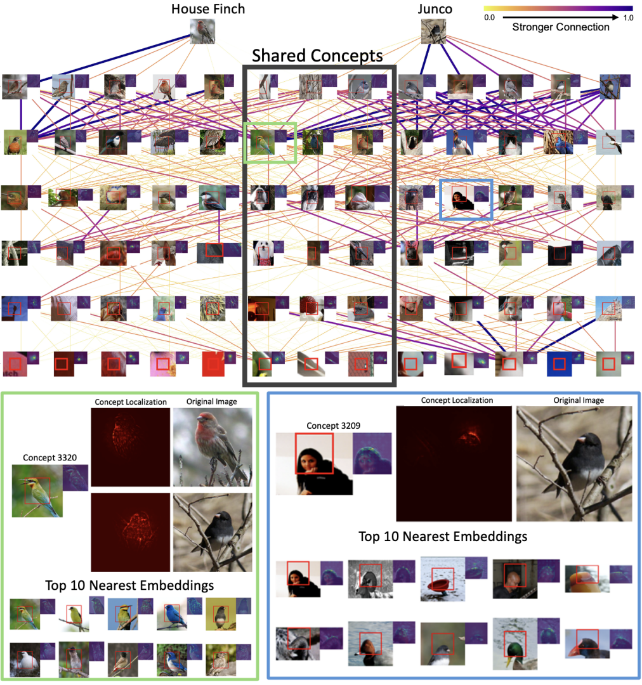
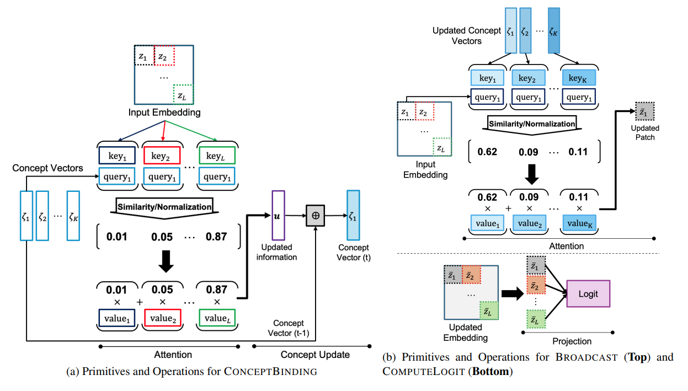
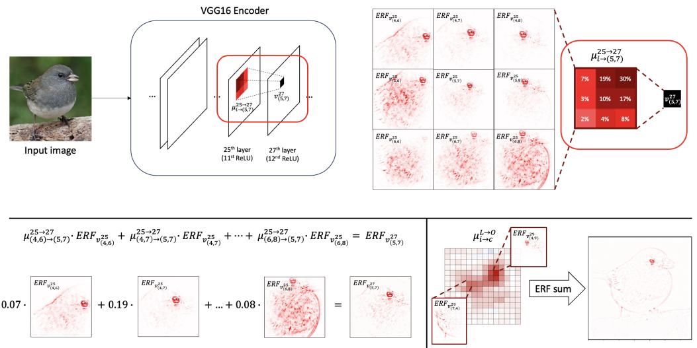

|
Sangyu Han I am currently a graduate student in the Interdisciplinary Program in Artificial Intelligence at Seoul National University, advised by Professor Nojun Kwak in the Machine Intelligence and Pattern Analysis Lab (MIPAL). Prior to starting my graduate studies, I earned my first bachelor’s degree from the School of Health and Environment Science and my second bachelor’s degree from the Interdisciplinary Major in Artificial Intelligence at Korea University. |
{kind=link}
ResearchI am deeply interested in Explainable AI, particularly in Mechanistic Interpretability(i.e., reverse-engineering neural networks). I aim to identify monosemantic representations within a model’s hidden layers and uncover how these representations interact throughout the model. My goal is to enable anyone to easily observe a model’s internal representation processes, thereby contributing to the development of safe, transparent, and trustworthy AI. |
|

|
DECOMPOSE THE MODEL: MECHANISTIC INTERPRETABILITY IN IMAGE MODELS WITH GENERALIZED
INTEGRATED GRADIENTS (GIG)
Yearim Kim*, Sangyu Han*, Sangbum Han, Nojun Kwak. arXiv, 2024 project page / arXiv We demonstrated that attributions between monosemantic concept vectors can reveal the development of complex concepts (for example, the concept of a "dog’s face") throughout the hidden layers of an image model. Our method is computationally efficient and robust to noise, enabling it to show how adversarial noise alters a model’s predictions. |
|

|
Bi-ICE: An Inner Interpretable Framework for Image Classification via Bi-directional Interactions between Concept and Input Embeddings
Jinyung Hong*, Yearim Kim*, Keun Hee Park, Sangyu Han, Nojun Kwak, Theodore P Pavlic, arXiv, 2024 arXiv We propose a conceptual framework and a bi-directional interpretation module (Bi-ICE) for large-scale image classification tasks that uncovers internal mechanisms at multiple levels. Using human-interpretable concepts, our approach generates predictions, quantifies concept contributions, and localizes them in the inputs. This method not only increases transparency and interpretability but also reveals how concepts are learned and converge within the model. |
|

 |
Respect the model: Fine-grained and Robust Explanation with Sharing Ratio Decomposition
Sangyu Han*, Yearim Kim*, Nojun Kwak. ICLR, 2024 arXiv We propose SRD (Sharing Ratio Decomposition), a robust XAI method that faithfully reflects a model's inference process by analyzing nonlinear interactions between filters from a vector perspective. Additionally, we introduce APOP (Activation-Pattern-Only Prediction) to redefine relevance, incorporating both active and inactive neurons. SRD enables recursive decomposition of feature vectors, providing high-resolution receptive fields and enhancing interpretability and robustness in model explanations. |
|
This page is a fork of Jon Barron's webpage. Thanks to Jon Barron for sharing! |